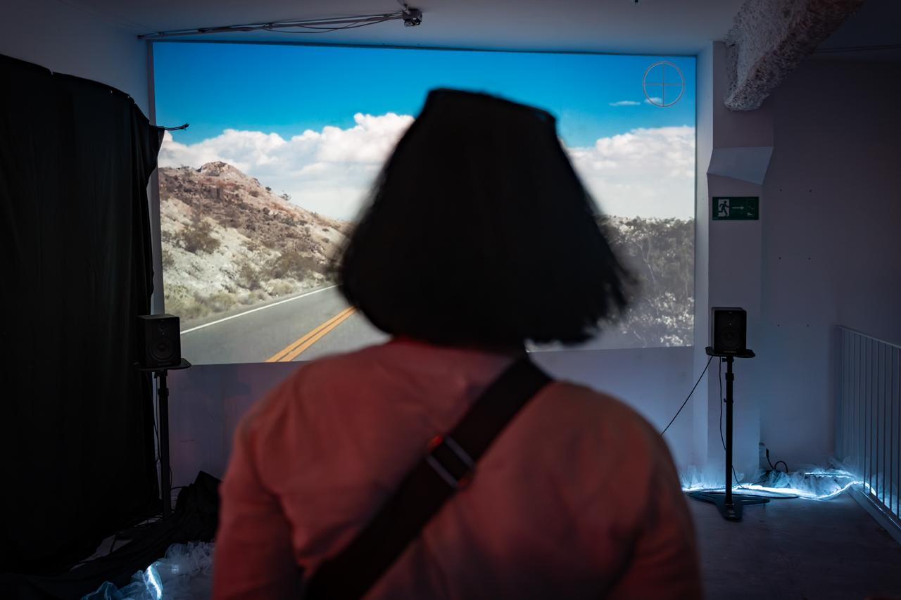
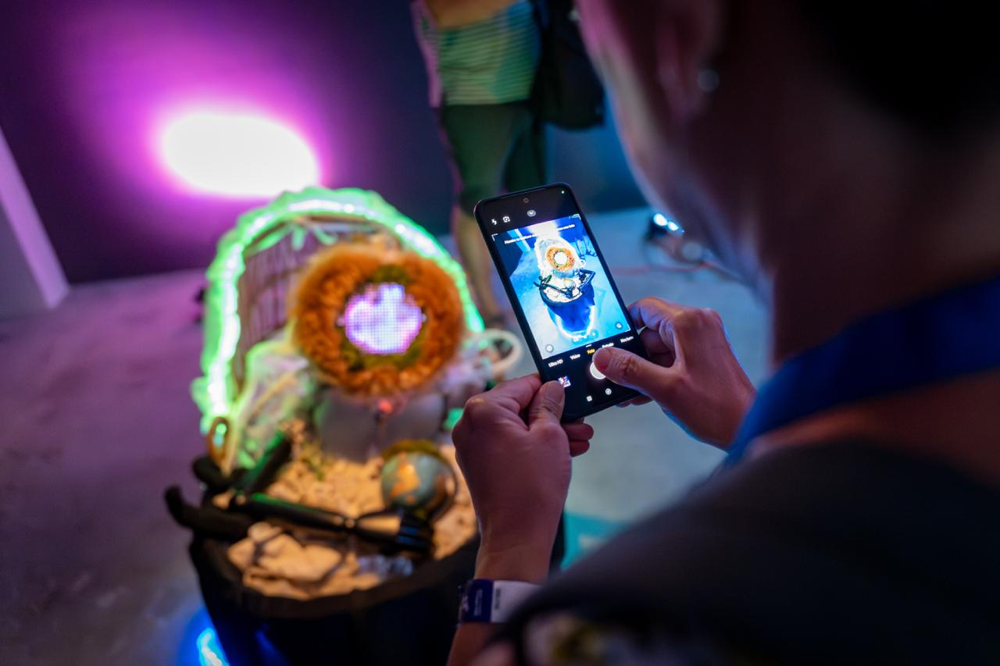
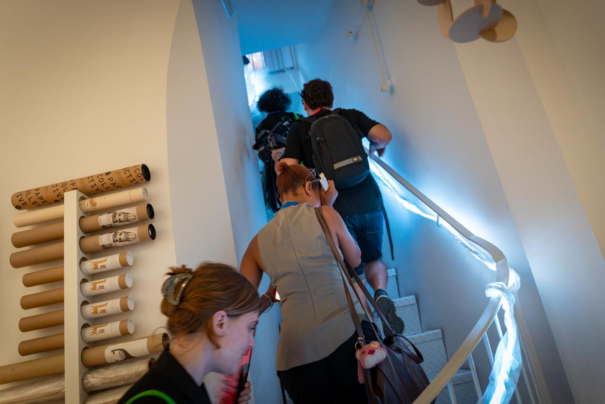
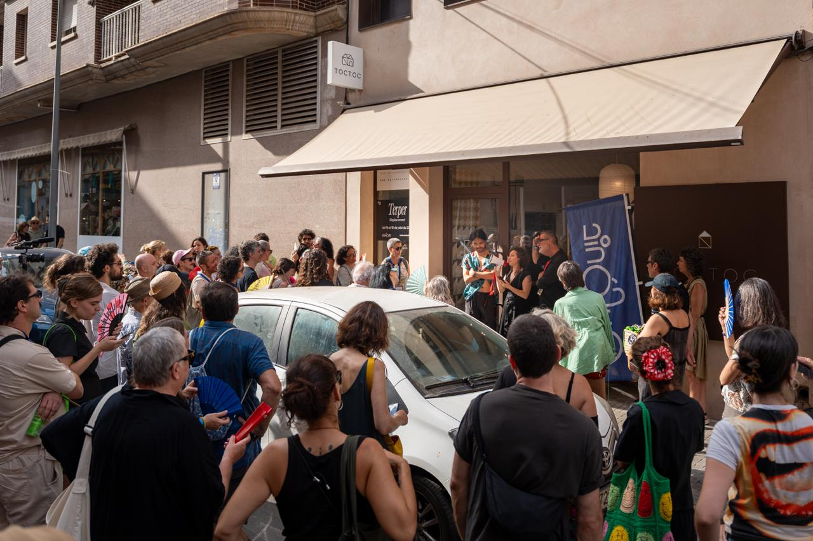

Eufònic Festival, Amposta
This art installation draws attention to the ecological consequences of animal habitat disruption, the displacement of civilians through conflict, the cultural fragmentation experienced by Indigenous communities—emphasizing that displacement is not a singular event, but rather a layered and ongoing condition shaped by environmental, political, and historical forces.
The 24-hour cycle is divided into four symbolic seasons, with each hour representing a gradual transition: beginning in the purity of untouched nature, descending into increasing human influence, and eventually returning to a state of natural equilibrium at the top of the hour; nature shall always prevail. This cyclical narrative underscores the temporality and repetition inherent in both ecological and cultural dislocation.
Within the installation space are various sculptures:
Hand Reach — this creature's balance relies on its outstretched hand, a gesture of connection. It embodies vulnerability, resilience, and the search for support in a disconnected world.
Porta — a lit door shape highlights the liminal quality of portals—thresholds of transformation or passage into the unknown.
Sentinel — a luminous sentinel holding a fading world; a switch in its other hand—the ability for change.
Forest — inspired by an ancient Quercus tree, a mask and photo that reflects how there is not separation between human and nature.




2026
Audio installation, spoken word, textile sculptures, synced LEDs, photography prints, video projection
Amposta
1 hour (loop)